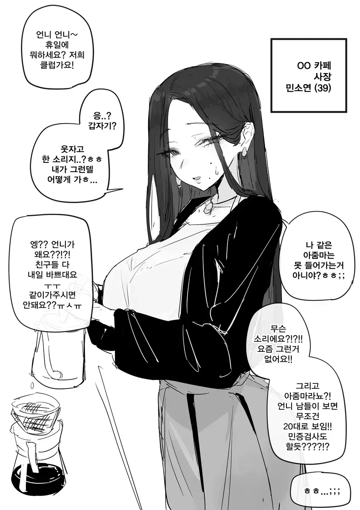
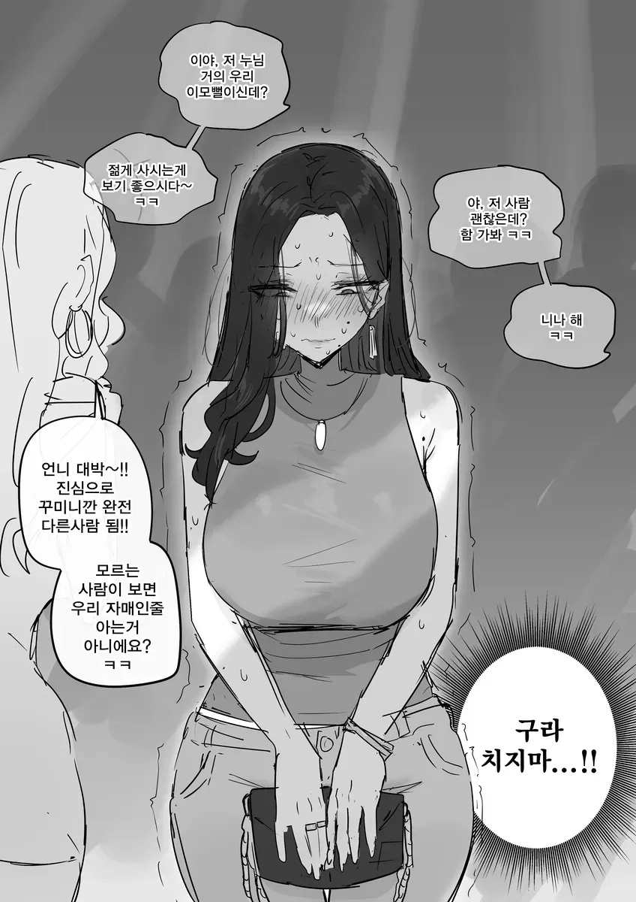

122 · 7 · 7 시간 전 · 원문


쌉가능
수집 당시 댓글 7개
순라면진한맛 · 5 시간 전
못됐다 ㅋㅋ
햄부기온앤온 · 4 시간 전
시라누이Q · 4 시간 전
페어트리 · 3 시간 전
긴장해서 땀에 젖은 겨드랑이 보여주세요 누나
INTP · 3 시간 전
어흐어흐
년차글쟁이 · 2 시간 전
만화니까 그렇지 실제로는 팔자주름에 나이 든 티 팍팍 날 것 아냐
NTR의양지화 · 1 시간 전
같이 가자 했던 후배가 사실은 레즈였고 저 선배를 좋아함,그러고 선배가 헌팅남한테 끌려가는걸 보고 집 가서 상상하는 스토리


못됐다 ㅋㅋ